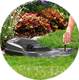
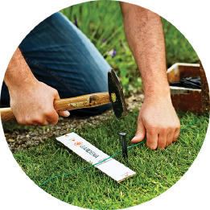
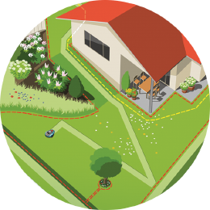
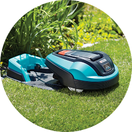
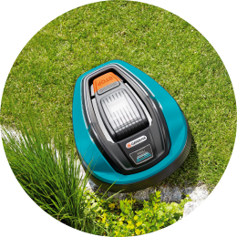

Для газона
площадью
до 500 м2.
Посвятите время себе, семье и друзьям, пока газонокосилка-робот GARDENA будет почти бесшумно поддерживать газон в идеальном состоянии. Наслаждайтесь отдыхом на даче теперь это так легко!
Мечтали ли Вы прогуляться босиком по насыщенно зеленому, мягкому и здоровому ковру из травы? Это расслабляет! Мы вложили наш многолетний опыт и знания в разработку газонокосилки-робота GARDENA R50Li и предлагаем современные технические решения для Вашего удобства. Система SensorCut не пропустит ни одной травинки и гарантирует идеальный результат кошения.
Представьте: Вы приезжаете на дачу или загородный дом, а газон уже идеально под- стрижен! С газонокосилкой- роботом GARDENA, Ваш прекрасный и аккуратный газон станет еще более ухоженным на всем участке, включая периметр вокруг дома! Сохраните это время для более интересных дел!
Большой ЖК-дисплей
и удобные кнопки меню
Низкий уровень
потребления энергии
Современный литий-ионный аккумулятор
60 дБ (А) – не будет беспокоить Вас или Ваших соседей
Двойная защита от кражи при помощи PIN кода и сигнализации
До 25%
от 20 до 50 мм
Интеллектуальная газонокосилка-робот работает, пока Вы отдыхаете.
Наконец-то больше свободного времени!
Это значит — больше времени для семьи, друзей и себя.
| Определите место для зарядной станции | 1 |  |
|  | 2 | Проложите ограничительный провод |
| Проложите направляющий провод | 3 |  |
|  | 4 | Подсоедините провода к зарядной станции |
| Настройте газонокосилку-робот | 5 |
|  | 6 | Запустите газонокосилку-робот |
Газонокосилка-робот GARDENA работает самостоятельно и охватывает только участок в пределах ограничительного провода.
| Артикул | 4077–32 |
| Рекомендованная площадь кошения | До 500 м² |
| Время зарядки аккумулятора | 90 мин. |
| Время кошения на одной зарядке, прибл. | 60 мин. |
| Принадлежности в комплекте |
|
| Тип аккумулятора / Мощность | Литий-ионный аккумулятор 18 Вт / 1.6 Ач |
| Зарядка аккумулятора | Автоматическая |
| Максимальный уклон | До 25% |
| Регулировка высоты кошения, мин.-макс. | 20–50 мм |
| Дисплей | ЖК дисплей с программируемым меню |
| Вес / Габариты (Д х Ш х В) | 7.4 кг / 58×46×25.5 см |
| Защита от кражи | PIN код и сигнализация |
| Датчики | Столкновения, поднятия и наклона |
| Мульчирование | • |
| Работа в дождь | • |
| Режим энергосбережения | • |
| Гарантированный уровень шума | 60 дБ (А) |
| Максимальное количество часов работы в день | 13 ч |